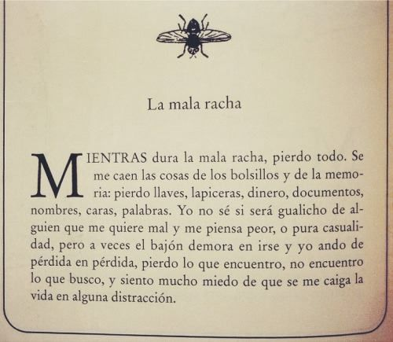

"Mientras dura la mala racha pierdo todo. Se me caen las cosas de los bolsillos y de la memoria: pierdo llaves dinero, documentos, nombres, caras, palabras... y siento mucho miedo de que se me caiga la vida en alguna distracción". Eduardo Galeano
